Project 1 - Ashley Jung
Goal
Align misaligned RGB color channels in scanned images and improve image contrast using various techniques.
Approach
- Read an image and splitting it into three equal parts, which represent the blue, green, and red color channels, respectively.
- Crop the color channels to remove unnecessary borders.
- Use image pyramid to perform multi-level image alignment.
Create progressively smaller versions of the images and aligning them from the lowest resolution to the highest, refining the offset at each level using Normalized Cross-Correlation (NCC) to determine the best alignment between the red and green channels relative to the blue channel.
- Stack RGB channels to render the image.
Bells and whistles
- Automatic Contrast
Tried different methods of automatic contrast, and CLAHE histogram equalization produced the best image out of these methods
- Converted rgb to hsv, apply histogram on intensity of the image
- CLAHE Histogram Equalization method
- Histogram equalization for each color channel
- Better features
Applied the Canny edge detector to each level of the image pyramid to extract edge maps, focusing on structural features for more accurate alignment of color channels.
Results
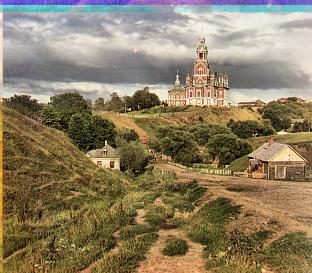
Red Offset: (12, 3), Green Offset: (5, 2)
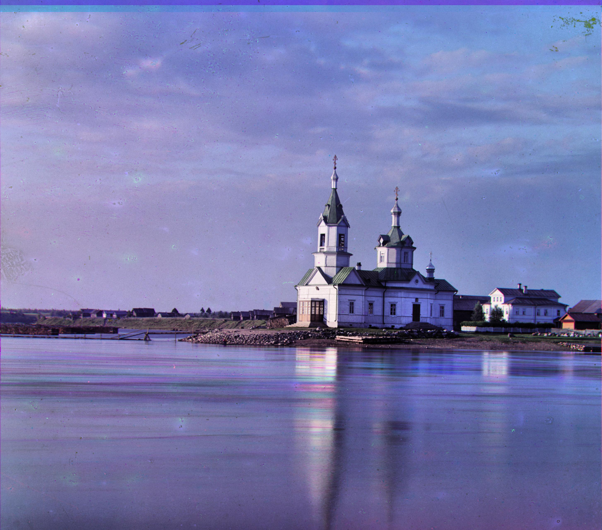
Red Offset: (58, -4), Green Offset: (25, 4)
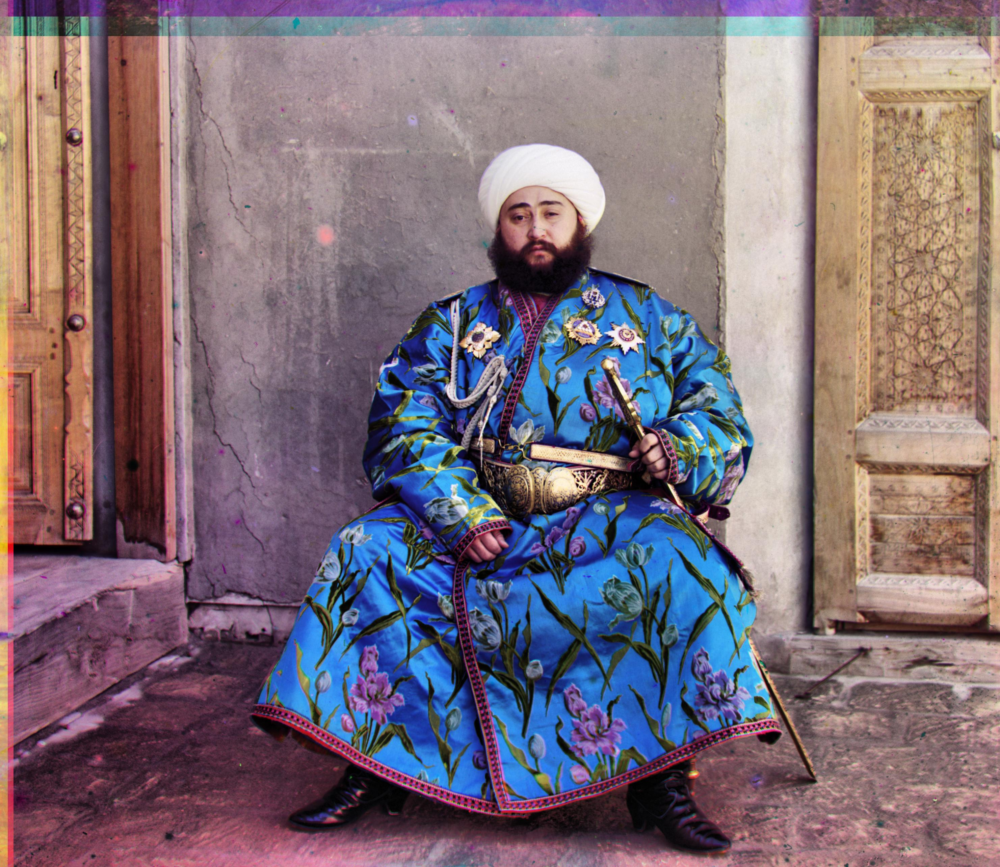
Red Offset: (107, 40), Green Offset: (49, 23)
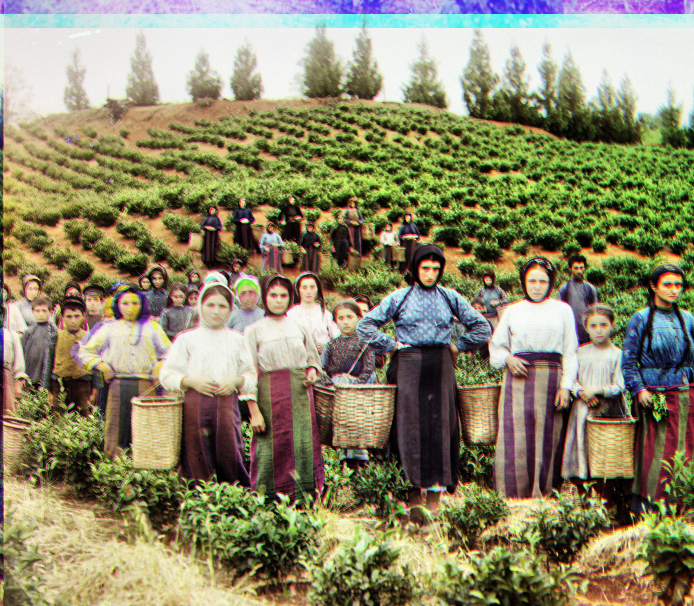
Red Offset: (118, 11), Green Offset: (60, 18)
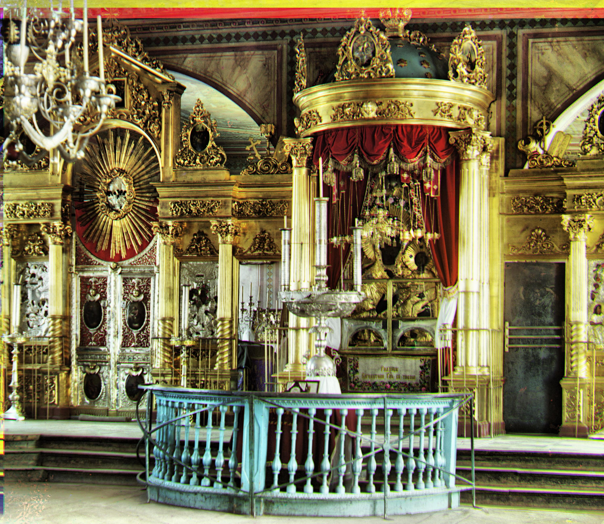
Red Offset: (90, 22), Green Offset: (38, 16)
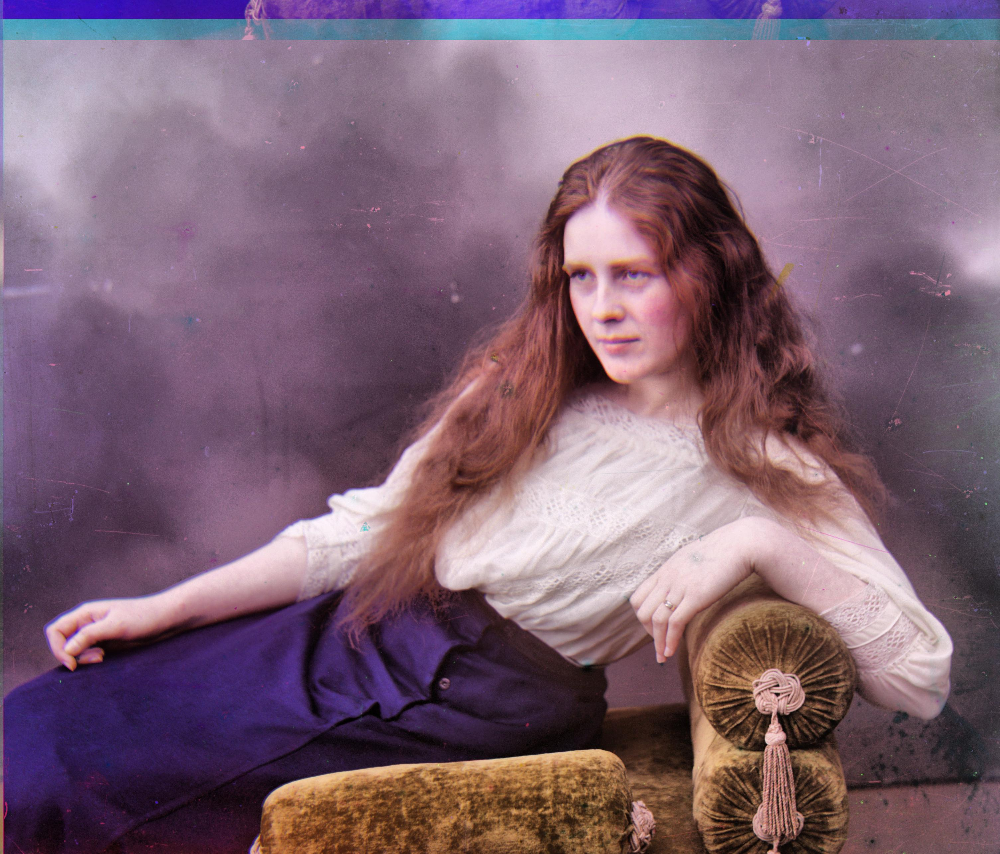
Red Offset: (120, 13), Green Offset: (57, 9)
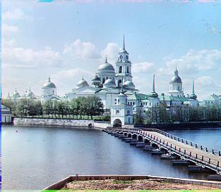
Red Offset: (3, 2), Green Offset: (-3, 2)
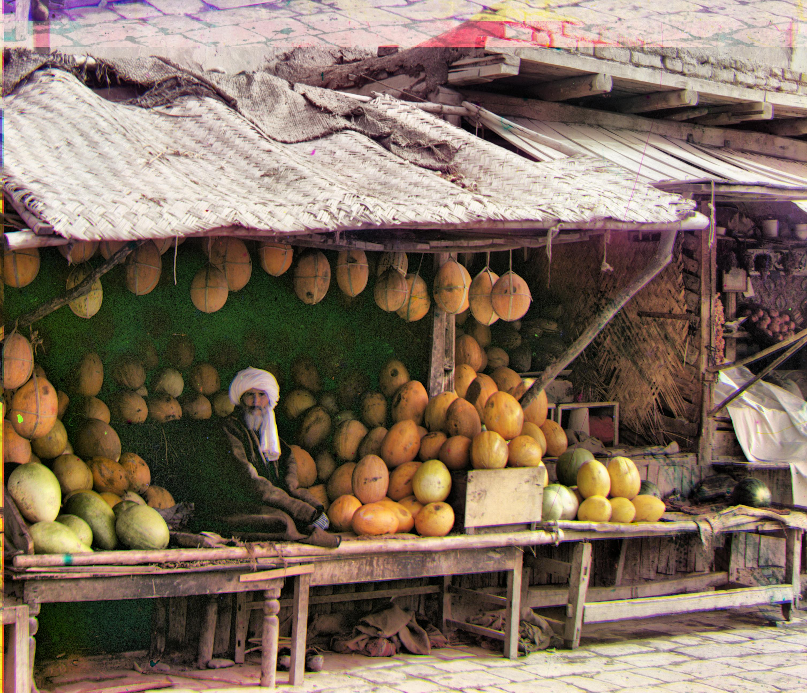
Red Offset: (177, 14), Green Offset: (79, 9)
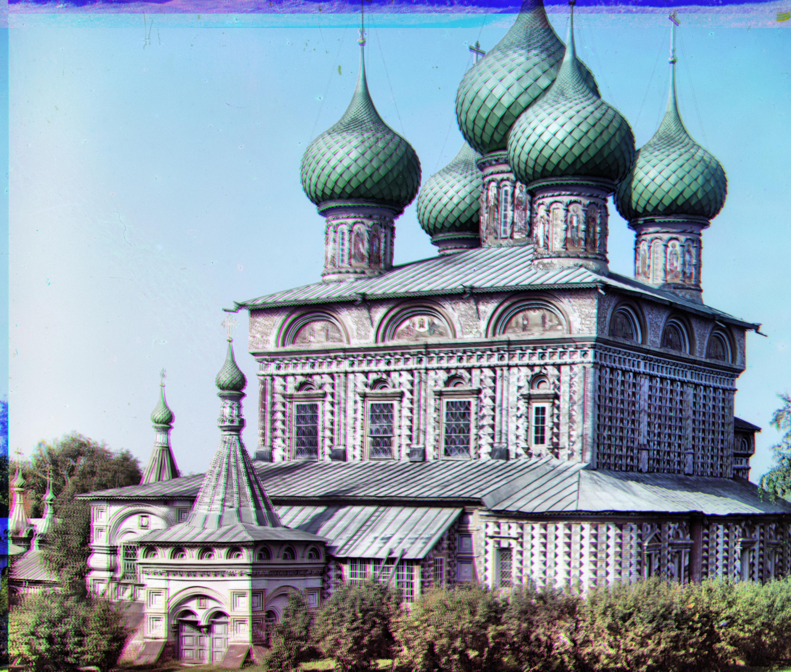
Red Offset: (107, 34), Green Offset: (52, 30)
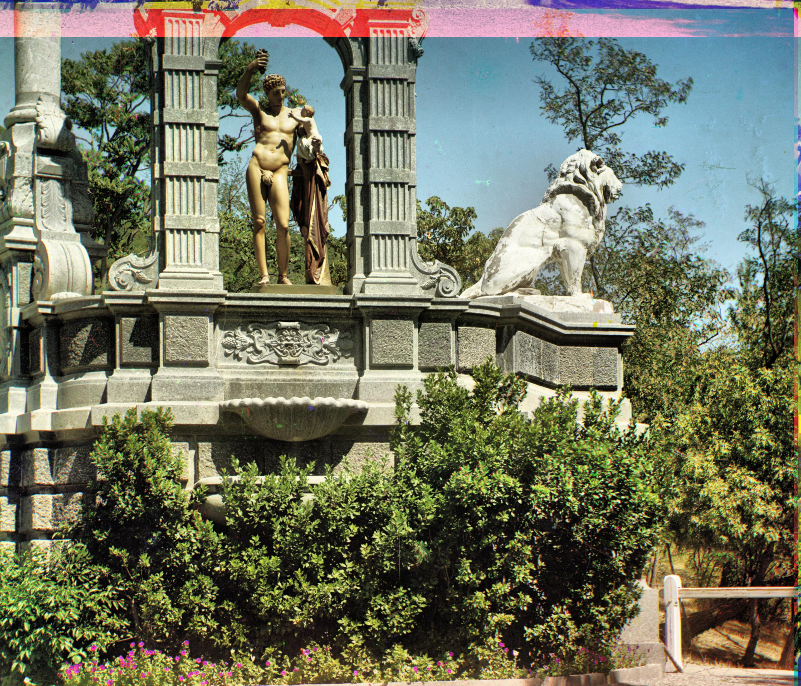
Red Offset: (140, -27), Green Offset: (33, -11)
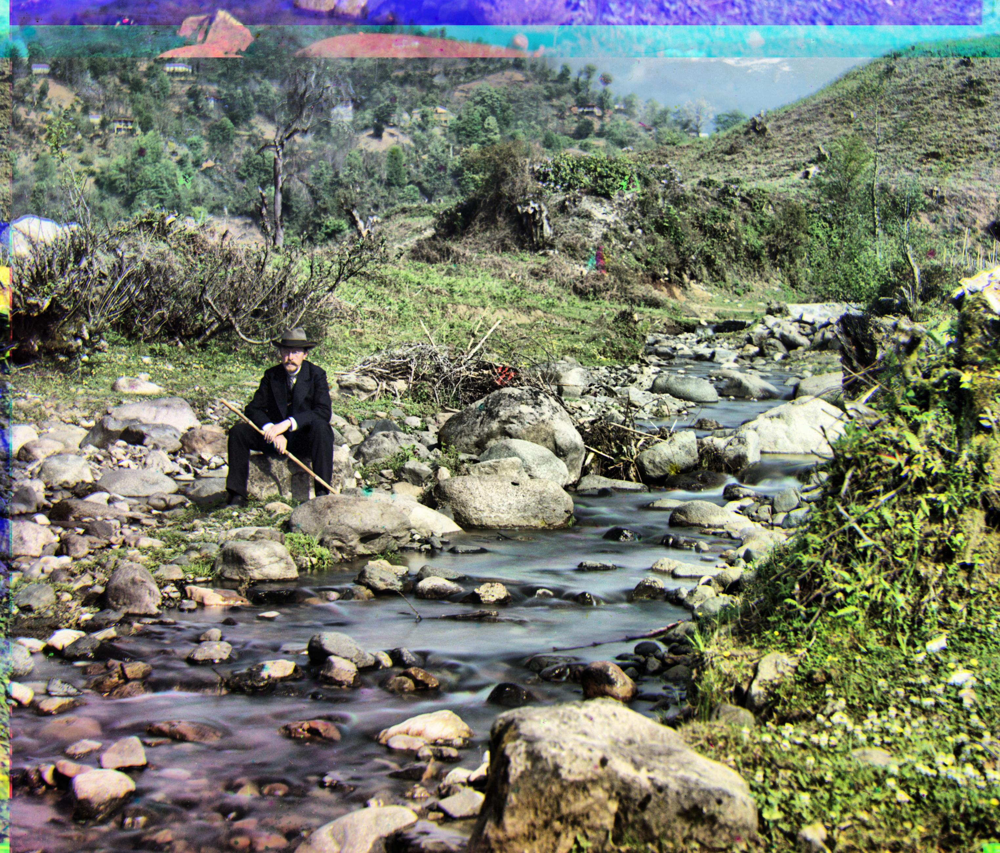
Red Offset: (175, 37), Green Offset: (77, 29)
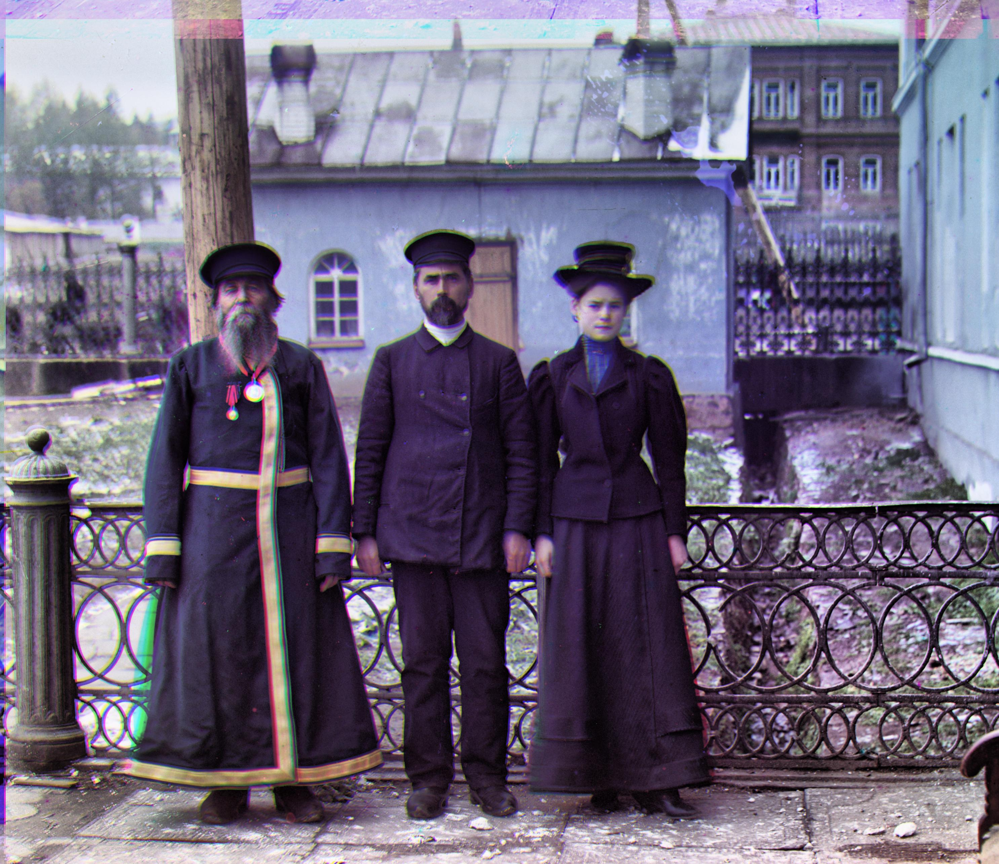
Red Offset: (115, 12), Green Offset: (57, 17)
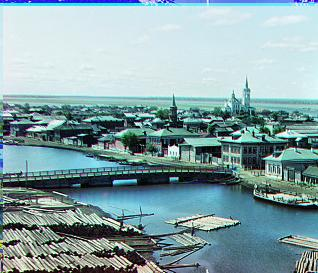
Red Offset: (6, 3), Green Offset: (3, 3)
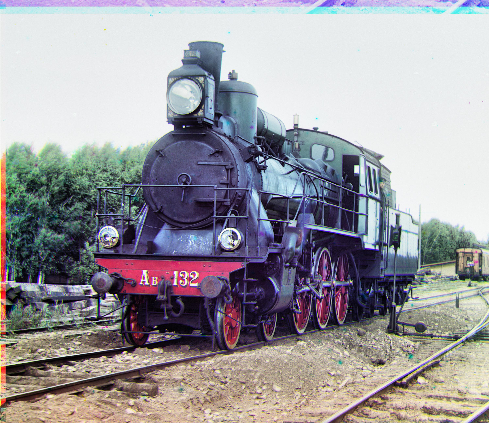
Red Offset: (84, 34), Green Offset: (40, 8)